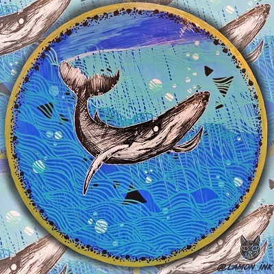

Serviços
- Tatuador Geek: artes focada em animes, mangás, filmes, séries, games e dentre outros
- Higiene e segurança: studio e equipamentos limpos e esterilizado para sua segurança e conforto
- Facil localização: Próximo a estações e terminais de onibus, no centro de São Paulo
- Arte exclusiva: trabalho indidivual e único para cada cliente.
Portfólio
-

Tattoos
-

Quadros
-
Printers